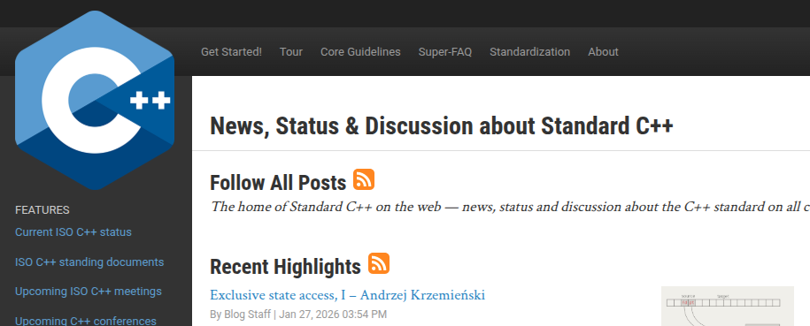
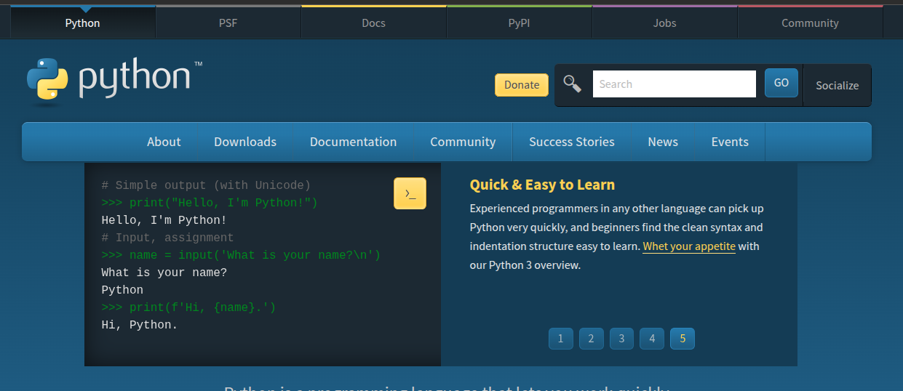

DynLex
A programming language designed for humans.
Write code that reads like natural language.
Code That Speaks
No cryptic syntax. No memorizing symbols. Just describe what you want.
glClearColor(0.0f, 0.0f, 0.0f, 1.0f);
glClear(GL_COLOR_BUFFER_BIT);
glBegin(GL_QUADS);
for (int i = 0; i < 10; i++) {
glVertex2f(i * 50, 100);
glVertex2f(i * 50 + 40, 100);
glVertex2f(i * 50 + 40, 140);
glVertex2f(i * 50, 140);
}
glEnd();set the background to black
repeat 10 times with i as index:
draw a square at i * 50, 100 with size 40Define Your Own Language
Create patterns that match how you think. The syntax is yours to shape.
If you can define Python syntax in DynLex, why use Python?
when a customer sends an email:
respond to the email with "We have received your message."
when the order is ready:
notify the customer
update the status to "shipped"Supreme Performance
Compiles to machine code via LLVM. No runtime overhead, no virtual machine.
No language is faster.
With -O3, both DynLex and C++ compute the result at compile time via LLVM constant folding.
Human and AI Native
Designed for both humans and AI agents.
Natural language patterns are intuitive to read, write, and generate.
AI output tokens are filtered by a pattern tree, ensuring valid syntax.
Eye for Beauty
Other languages spend their time maintaining decades of legacy complexity.
DynLex stays minimal, leaving room to focus on elegance and powerful features.
Speaking of beauty...
When a language has been around for decades, even the official website starts to show its age.

C++ - Founded 1985

Python - Founded 1991
Start Building
Clone the repo and write your first DynLex program in seconds.
View on GitHub